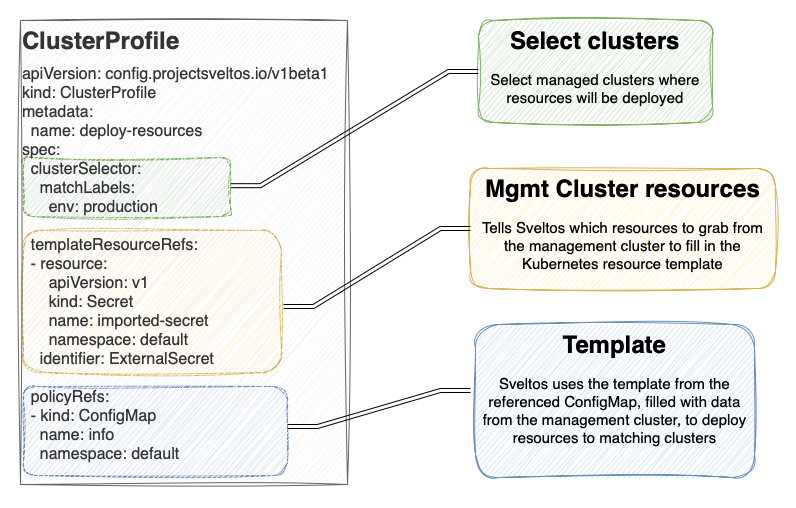

Introduction to Templates
Introduction to Templates
Sveltos lets you define add-ons and applications using templates. Before deploying any resource down the managed clusters, Sveltos instantiates the templates using information gathered from the management cluster. Lua can also be used.

In this example, Sveltos retrieves the Secret imported-secret from the default namespace. This Secret is assigned the alias ExternalSecret. The template can subsequently refer to this Secret by employing the alias ExternalSecret. It can also be used with Helm Charts.
Note
All resources listed in the TemplateResourceRefs section can be accessed within the template using getResource "<alias>". For instance, we could access the Secret in an example with getResource "ExternalSecret".
Template Functions
Sveltos supports the template functions included from the Sprig open source project. The Sprig library provides over 70 template functions for Gos template language. Some of the functions are listed below. For the full list, have a look at the Spring Github page.
- String Functions: trim, wrap, randAlpha, plural, etc.
- String List Functions: splitList, sortAlpha, etc.
- Integer Math Functions: add, max, mul, etc.
- Integer Slice Functions: until, untilStep
- Float Math Functions: addf, maxf, mulf, etc.
- Date Functions: now, date, etc.
- Defaults Functions: default, empty, coalesce, fromJson, toJson, toPrettyJson, toRawJson, ternary
- Encoding Functions: b64enc, b64dec, etc.
- Lists and List Functions: list, first, uniq, etc.
- Dictionaries and Dict Functions: get, set, dict, hasKey, pluck, dig, deepCopy, etc.
- Type Conversion Functions: atoi, int64, toString, etc.
- Path and Filepath Functions: base, dir, ext, clean, isAbs, osBase, osDir, osExt, osClean, osIsAbs
- Flow Control Functions: fail
Resource Manipulation Functions
Sveltos provides a set of functions specifically designed for manipulating resources within your templates.
- getResource: Takes the identifier of a resource and returns a map[string]interface{} allowing to access any field of the resource.
- copy: Takes the identifier of a resource and returns a copy of that resource.
- setField: Takes the identifier of a resource, the field name, and a new value. Returns a modified copy of the resource with the specified field updated.
- removeField: Takes the identifier of a resource and the field name. Returns a modified copy of the resource with the specified field removed.
- getField: Takes the identifier of a resource and the field name. Returns the field value
- chainSetField: This function acts as an extension of setField. It allows for chaining multiple field updates.
- chainRemoveField: Similar to chainSetField, this function allows for chaining multiple field removals.
Note
These functions operate on copies of the original resource, ensuring the original data remains untouched.
For practical examples, take a look here.
Consider combining those methods with the post render patches approach.
Extra Template Functions
- toToml: It takes an interface, marshals it to toml, and returns a string. It will always return a string, even on marshal error (empty string)
- toYaml: It takes an interface, marshals it to yaml, and returns a string. It will always return a string, even on marshal error (empty string)
- toJson: It takes an interface, marshals it to json, and returns a string. It will always return a string, even on marshal error (empty string)
- fromToml: It converts a TOML document into a map[string]interface{}
- fromYaml: It converts a YAML document into a map[string]interface{}
- fromYamlArray: It converts a YAML array into a []interface{}
- fromJson: It converts a YAML document into a map[string]interface{}
- fromJsonArray: It converts a JSON array into a []interface{}